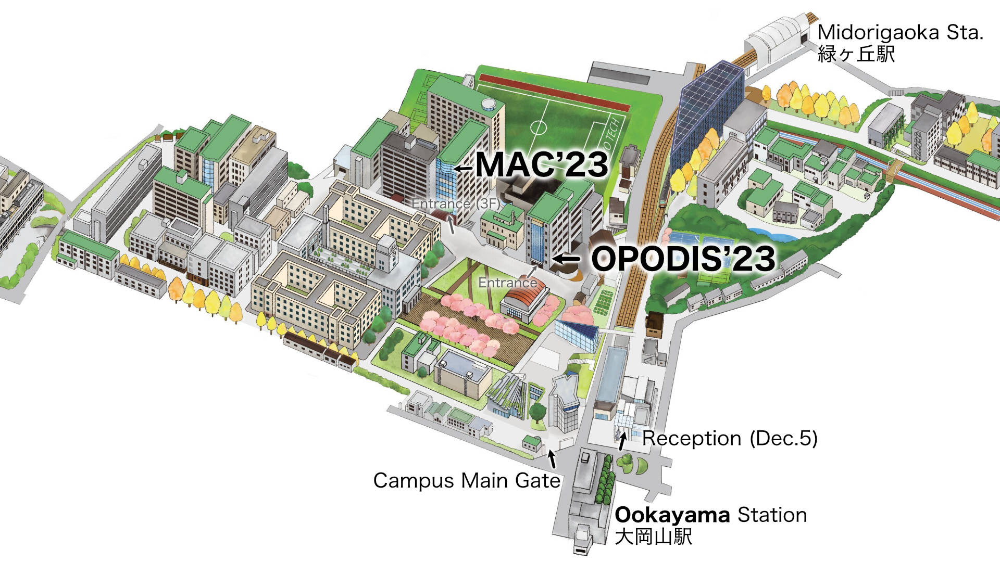

About OPODIS 2023
OPODIS is an open forum for the exchange of state-of-the-art knowledge concerning distributed computing and distributed computer systems. All aspects of distributed systems are within the scope of OPODIS, including theory, specification, design, performance, and system building. With strong roots in the theory of distributed systems, OPODIS now covers the whole range between the theoretical aspects and practical implementations of distributed systems, as well as experimentation and quantitative assessments.
Where
Tokyo Institute of Technology
West 9, Multi-Purpose Digital Hall
Ookayama 2-12-1
152-8550 Meguro-ku, Tokyo
Japan
東京都目黒区大岡山2-12-1, 東京工業大学, 西９号館・ディジタル多目的ホール
When
Wednesday to Friday
6-8 December 2023
Satellite Event (MAC 23)
The research meeting and school on Distributed Computing by Mobile Robots, aka, Moving and Computing (MAC 23) will be organized as a satellite event of OPODIS during the two days following OPODIS 2023.
Where / When
MAC 23 will take place on December 9/10 (Sat/Sun) in building West 8E; a different building next to the OPODIS venue.
Keynote Speakers
We will host the following outstanding speakers.
Vincent Gramoli
University of Sydney and Redbelly Network

François Le Gall
Nagoya University
Roger Wattenhofer
ETH Zurich
Committees
Organizing Committee
- General Chairs:
- Xavier Défago (Tokyo Tech., Japan)
- Koichi Wada (Hosei Univ., Japan)
- Publication Chair:
- Junya Nakamura (Toyohashi University of Technology, Japan)
- Organizing Team:
- François Bonnet (Tokyo Tech., Japan)
- Yuichi Sudo (Hosei University, Japan)
- Yasumasa Tamura (Tokyo Tech., Japan)
- Mayuko Takano (Tokyo Tech., Japan)
- Steering Committee:
- Quentin Bramas (University of Strasbourg, France)
- Pascal Felber (University of Neuchâtel, Switzerland) — chair
- Paola Flocchini (University of Ottawa, Canada)
- Vincent Gramoli (University of Sydney, Australia)
- Eshcar Hillel (Pliops, Israel)
- Yannic Maus (TU Graz, Austria)
- Alessia Milani (LIS, Aix-Marseille University, France)
- Roberto Palmieri (Lehigh University, USA)
Program Committee
- Program Committee Chairs:
- Alysson Bessani (FCUL/ULisboa, Portugal)
- Yukiko Yamauchi (Kyushu University, Japan)
- Program Committee:
- Eduardo Alchieri (University of Brasilia, Brazil)
- Anish Arora (The Ohio State University, USA)
- Hagit Attiya (Technion, Israel)
- François Bonnet (Tokyo Institute of Technology, Japan)
- Silvia Bonomi (Sapienza University of Rome, Italy)
- Shantanu Das (Aix-Marseille University, France)
- Joshua J. Daymude (Arizona State University, USA)
- Tobias Distler (University of Erlangen-Nuremberg, Germany)
- Sisi Duan (Tsinghua University, China)
- Yuval Emek (Technion, Israel)
- Bernardo Ferreira (FCUL/ULisboa, Portugal)
- Paola Flocchini (University of Ottawa, Canada)
- Leszek A. Gąsieniec (University of Liverpool, UK)
- Seth Gilbert (National University of Singapore, Singapore)
- Magnus M. Halldorsson (Reykjavik University, Iceland)
- Eshcar Hillel (Pliops, Israel)
- Taisuke Izumi (Osaka University, Japan)
- Sayaka Kamei (Hiroshima University, Japan)
- Yonghwan Kim (Nagoya Institute of Technology, Japan)
- Evangelos Kranakis (Carleton University, Canada)
- Fabian Kuhn (University of Freiburg, Germany)
- Anissa Lamani (University of Strasbourg, France)
- Euripides Markou (University of Thessaly, Greece)
- Achour Mostéfaoui (University of Nantes, France)
- Junya Nakamura (Toyohashi University of Technology, Japan)
- Roberto Palmieri (Lehigh University, USA)
- Fernando Pedone (University of Lugano, Switzerland)
- Maria Potop-Butucaru (Sorbonne University, France)
- Nuno Preguiça (University NOVA Lisboa, Portugal)
- Vincent Rahli (University of Birmingham, UK)
- Étienne Rivière (UCLouvain, Belgium)
- Christian Scheideler (Paderborn University, Germany)
- Valerio Schiavoni (University of Neuchâtel, Switzerland)
- Gregory Schwartzman (Japan Advanced Institute of Science and Technology, Japan)
- Jukka Suomela (Aalto University, Finland)
- Sébastien Tixeuil (Sorbonne University, France)
Program
Program outline
| Dec. 6 | Dec. 7 | Dec. 8 | |
|---|---|---|---|
| 9:00 | Opening | ||
| 9:10 | Keynote 1 | Keynote 2 | Keynote 3 |
| 10:10 | coffee break | ||
| 10:35 | Session 1 (3 talks) |
Session 4 (3 talks) |
Session 7 (3 talks) |
| 11:45 | lunch | ||
| 13:30 | Session 2 (4 talks) |
Session 5 (4 talks) |
Session 8 (4 talks) |
| 15:05 | coffee break | ||
| 15:30 | Session 3 (3 talks) | Session 6 (4 talks) |
Session 9 (4 talks) |
| 16:40 | business meeting (ca.1h) |
||
| Closing | |||
Venue
Venue location info

OPODIS 23 takes place in West Area, Building 9, Multi-Purpose Digital Hall. The reception (Dec. 5) is at Tokyo Tech Front, Royal Blue Hall. MAC 23 (Dec. 9-10) is organized in West Area, Building 8E, 10th floor, Conference Hall.
Most attendants will arrive from Ookayama station (Meguro line, Oimachi line) and enter the campus via the Main Gate. Those coming from Midorigaoka station (Oimachi line) will come via South exit, through the bicycle parking and enter the campus via the Midorigaoka Gate.
- Wifi: eduroam is available throughout the Tokyo Tech campus.
If your institution does not support eduroam, we can create guest accounts on site. - Power plugs: Japanese power plugs are type A (2 flat pins; similar to USA). Voltage is 100V.
- Display: the conference room uses HDMI connectors. USB-C adapters will also be available.
- IC card: public transport uses any card of the Suica/PASMO family (interoperable).
Those with an iPhone can create a card in the wallet app.
Otherwise, it is highly recommended to buy a Welcome Suica card at the airport upon arrival.
The card can also be used as an electronic wallet in many shops and vending machines.
Travel
Travel and accommodation information for conference attendees.
By train
From within Japan, it is easy to reach Tokyo by bullet train (shinkansen). Google maps provides reasonably good advice for connections. Coming from Western Japan, the most convenient is to leave the shinkansen at Shin-Yokohama Station and change to the newly opened Tōkyū Shin-yokohama Line.
By plane
Tokyo has two major international airports: Narita and Haneda.
- Haneda airport (HND) is the larger of the two airports and better connected for local transport (e.g., Keikyū line). Most domestic flights and multiple flights to Europe and Asia land at Haneda airport.
- Narita airport (NRT) is farther away but this is aleviated by the Narita Express train that stops at Musashi-Kosugi station, as well as the Keikyu lines that run between the two airports and stop at Shinagawa station. Most flights from North America land at Narita airport thus leaving less choice.
Hotels
Tokyo offers a large variety of accommodations for all budgets and preferences.
We recommend booking a hotel close to one of the stops on the Meguro line, Oimachi line, Ikegami line, or Toyoko line.
Areas convenient for commuting to the venue are near the following stations:
Oimachi,
Meguro,
Jiyugaoka,
Musashi-Kosugi,
Futako-Tamagawa.
Other alternatives include:
Shibuya,
Ebisu,
Shinagawa,
Gotanda,
JR Kamata.
The top recommendation is Meguro Station as this runs against the flow of the morning rush hour.
Besides, the OPODIS banquet will be located near Meguro station
Registration
The conference has ended and registration is now closed. Details below are left for beraucratic reference:
- Complete OPODIS'23 registration form (Google form; closed)
- Open payment link (Stripe) provided on Google form (2nd page)
- Pay via stripe link
- Submit google form
- Contact us for any other requests: ...
- Proceed to register to MAC'23 (if applicable)
Attendees requiring an invitation letter for obtaining a visa may request one after completing their registration (...).
Student
(proof of enrollment required)
Until 12 Nov 2023: JPY 25,000.-
(ca.US$170/€160)
From 13 Nov 2023: JPY 50,000.-
(ca.US$340/€320)
(dates in Japan timezone)
- Conference attendance
- Conference Kit
- Proceedings (electr.)
- coffee breaks (6-8 Dec)
- Welcome reception (5 Dec)
- Banquet (7 Dec)
Regular
Until 12 Nov 2023: JPY 75,000.-
(ca.US$500/€480)
From 13 Nov 2023: JPY 95,000.-
(ca.US$640/€600)
(dates in Japan timezone)
- Conference attendance
- Conference Kit
- Proceedings (electr.)
- Coffee breaks (6-8 Dec)
- Welcome reception (5 Dec)
- Banquet (7 Dec)
Author
Until 12 Nov 2023: JPY 75,000.-
(ca.US$500/€480)
From 13 Nov 2023: N/A
(dates in Japan timezone)
- Conference attendance
- Conference Kit
- Proceedings (electr.)
- Coffee breaks (6-8 Dec)
- Welcome reception (5 Dec)
- Banquet (7 Dec)
Sponsors
We are grateful to our sponsors for their support to OPODIS'23.
- Supported by International Exchange Program of National Institute of Information and Communications Technology (NICT).
- Sponsored by the Institute of Electronics, Information and Communication Engineers (IEICE), Japan.
- Sponsored by Information Processing Society of Japan (IPSJ).